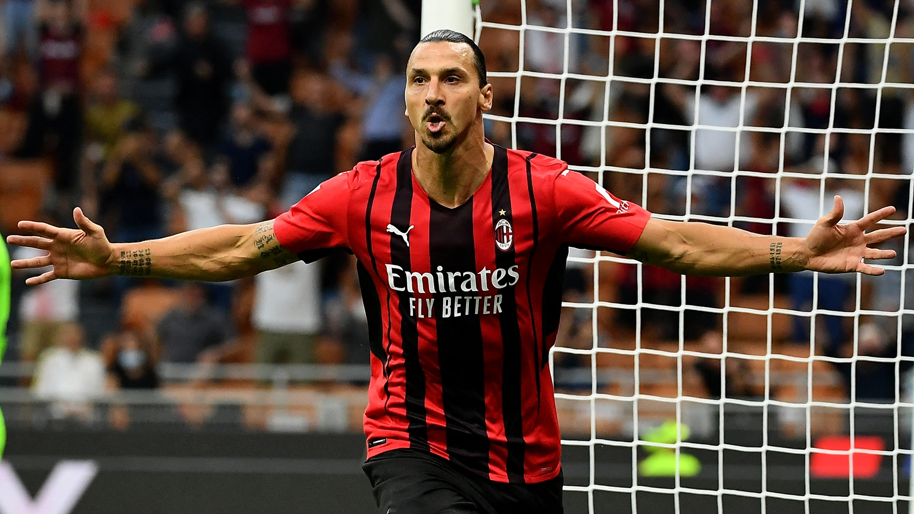
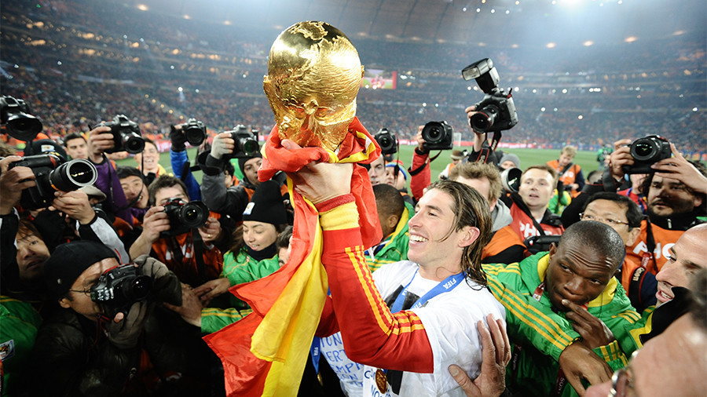

Zlatan Ibrahimovic is a Sweedish professional soccer player who currently He plays as a striker for Ac Milan an Italian club in the Serie A league as well as the Swedish national team. Ibrahimovic is well-known for his acrobatic aerial strikes, volleys, strong long shots, and amazing ball control. He is widely regarded as an all times the striker has scored over 570 goals in his career. 
Ronaldhino is a retired Brazilian soccer player who usually would play attacking midfielder, or winger. He is considered one of if not the most talented players of all time. He won two FIFA World Player of the Year awards and a Ballon d'Or Ronaldhino is known for his technical skills, creativity, dribbling, passing, and amazing accuracy when taking free-kicks, which comes from his background in futsal. Below is a video of Ronaldhino doing his notorious dance after a goal.
Sergio Ramos is a Spanish soccer player who plays center-back and currently plays with PSG and the Spanish national team. Sergio Ramos is known for his aggressive style of play, defence, and amazing goalscoring abilities even has a center-back. Being widely regarded as one of the best defensemen of all time Ramos spent sixteen seasons with Real Madrid, winning four Uefa Champions League titles and the Fifa World Cup in 2010. 
To return home click here